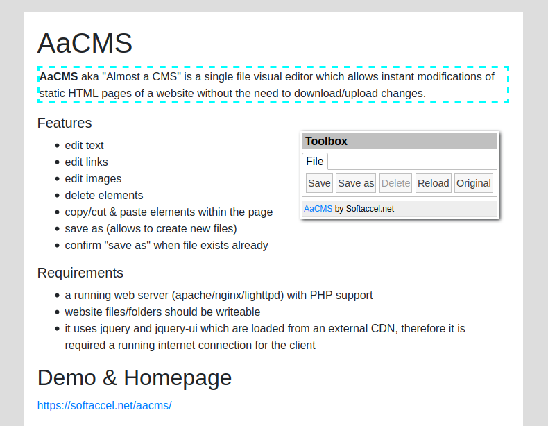

AaCMS
AaCMS or "Almost a CMS" is a single file visual editor which allows instant modifications of static HTML pages of a website.
Use it to perform content updates on your static website. Also, by using the Save As feature you can also create new pages.
Screenshot of editor in action

Features
- edit text
- edit links
- edit images
- delete elements
- copy/cut & paste elements within the page
- save as (allows to create new files)
- confirm "save as" when file exists already
Requirements
- a running web server (apache/nginx/lighttpd) with PHP support
- website files should be writeable
- it uses jquery and jquery-ui which are loaded from an external CDN, therefore it is required a running internet connection for the client
Links
Installation
- download editor.php from GitHub: https://raw.githubusercontent.com/vsergione/AaCMS/main/editor.php
- Edit
editor.php and set a user and password. Multiple users can be added
- Copy/upload
editor.php in the root folder of your website
- Security suggestion: rename file editor.php so it's name cannot be guesses easily
Usage
Point your browser to
http(s)://yourwebsiteaddress/editor.php?file=file_to_edit.html
and start editing.
You will notice a toolbox-like floating window that you can move around the page. By default it displays a "File menu" which you can use to save the file, save the file under a new name, reload or go to original file.
By moving the mouse over the page the hovered elements will be highlighted with a dashed border. Clicking on the hovered element will enter the edit mode.
Depending on the selected element type, you will get 2 standard menus and a selection dependent menu
- edit: use this menu to perform copy/cut & paste operations
- traverse: use the buttons from this menu to navigate through the elements tree. Useful especially for selecting elements which cannot be selected with a click, like: FORM, TABLE, FIELDSET, UL and so on
- text: this menu becomes active when clicking an element which can be edited as text, like DIV, P, TD, LI and so on. Once the element is selected you can start to edit it. Also, it provides some basic styling options: bold, italic, increase/decrease font size, and so on. The styling will be applied only to the text selection and not on the entire selected element.
- image: this menu becomes active when the selected element is an image and displays a form which can be used to modify the basic image properties
- link: this menu becomes active when the selected element is a link and displays a form to edit the link properties
Support
Feel free to signal any issues using the GIT Hub Issues:
https://github.com/vsergione/AaCMS